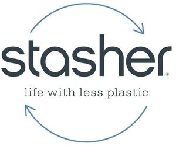

Trade Mark Journal No.2025/037 12 September 2025
WO0000001872220 (16,18,21)
Office of origin: United States of America
Date of International Registration:15 April 2025
Date of designation in the UK:
15 April 2025

A curved arrow pointing to the right above the word STASHER above the words LIFE WITH LESS PLATIC above a curved arrow pointing to the left.
The mark contains the colours black and blue.
The words STASHER LIFE WITH LESS PLASTIC in black. The arrows in blue.
International priority date claimed: 9 December 2024
(United States of America)
(98892824)
- Class 16
- Re-sealable and reusable bags made of silicone for household use; silicone food storage bags for household use; re-sealable and reusable food storage bags made of silicone for household use.
- Class 18
- Containers for personal use, namely, toiletry bags sold empty.
- Class 21
- Containers for household or kitchen use; containers for personal use, namely pill boxes; re-sealable and reusable food containers made of silicone for household use; re-sealable and reusable storage containers made of silicone for household use; household containers for foods; cookware for use in microwave ovens; cookware for use in ovens, namely silicone baking molds, cups and pans; reusable stainless steel water bottles sold empty; silicone cooking bags; silicone oven cooking bags; silicone microwave oven cooking bags; bags for microwave cooking.
Stasher Inc.
Representative: Katharine Sullivan, 1525 Howe Street, Racine WI 53403, UNITED STATES OF AMERICA